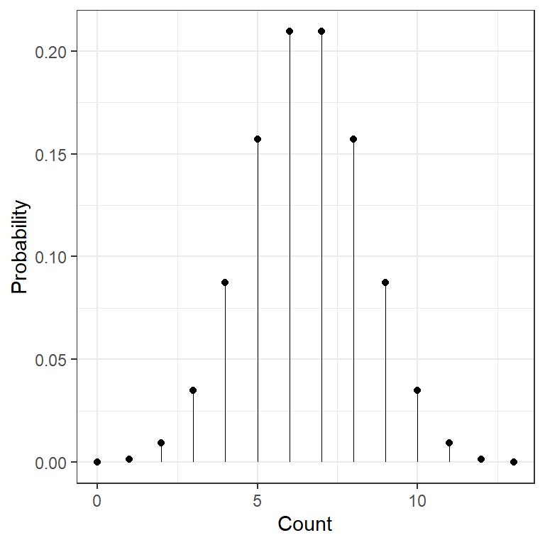
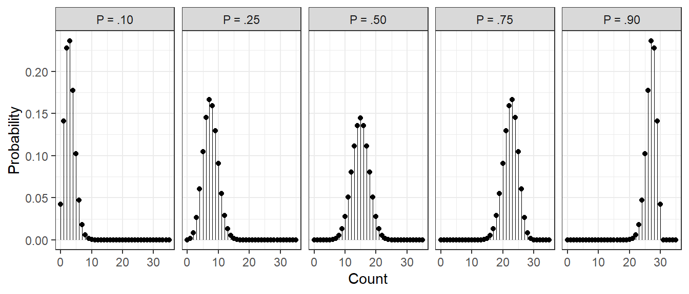
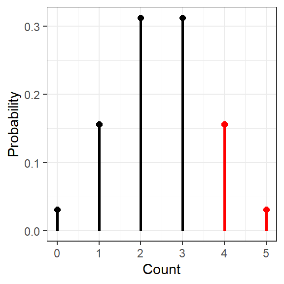
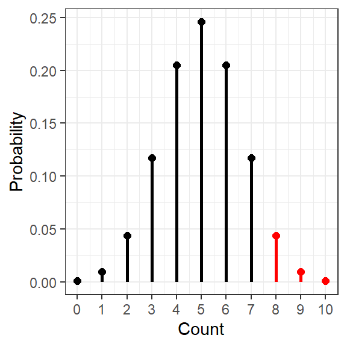
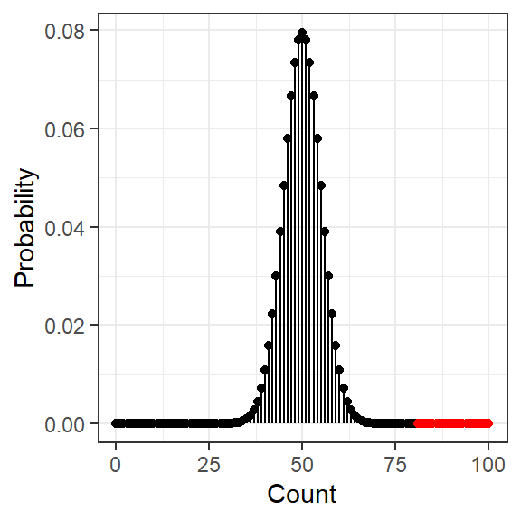

10 Binomial Sign Test
10.1 The Binomial Distribution
data.frame(count = 0:13) %>%
dplyr::mutate(prob = dbinom(count, size = 13, p = .50)) %>%
ggplot(aes(x = count,
y = prob)) +
geom_point() +
geom_segment(aes(xend = count,
y = 0,
yend = prob),
size = .1) +
theme_bw() +
scale_x_continuous() +
labs(x = "Count",
y = "Probability") +
theme(legend.position = "none")
10.1.1 Effect of Hypothesised “P” Value
ex_n = 30
data.frame(count = 0:35) %>%
dplyr::mutate(prob_10 = dbinom(count, size = ex_n, p = .10)) %>%
dplyr::mutate(prob_25 = dbinom(count, size = ex_n, p = .25)) %>%
dplyr::mutate(prob_50 = dbinom(count, size = ex_n, p = .50)) %>%
dplyr::mutate(prob_75 = dbinom(count, size = ex_n, p = .75)) %>%
dplyr::mutate(prob_90 = dbinom(count, size = ex_n, p = .90)) %>%
tidyr::pivot_longer(cols = contains("prob"),
names_to = "percent",
names_prefix = "prob_",
values_to = "prob") %>%
dplyr::mutate(percent = paste0("P = .", percent)) %>%
ggplot(aes(x = count,
y = prob)) +
geom_point() +
geom_segment(aes(xend = count,
y = 0,
yend = prob),
size = .1) +
theme_bw() +
scale_x_continuous() +
labs(x = "Count",
y = "Probability") +
theme(legend.position = "none") +
facet_grid(~ percent)
10.1.2 Effect of Sample Size
10.1.3 Probability of 4 (or more) out of 5
[1] 0.15625data.frame(count = 0:ex_n) %>%
dplyr::mutate(prob = dbinom(count, size = ex_n, p = ex_p)) %>%
dplyr::mutate(mark = cut(count,
breaks = c(0, ex_x - .5, ex_n),
include.lowest = TRUE)) %>%
ggplot(aes(x = count,
y = prob,
color = mark)) +
geom_point(size = 2) +
geom_segment(aes(xend = count,
y = 0,
yend = prob),
size = 1) +
theme_bw() +
scale_x_continuous(breaks = 0:ex_n) +
scale_color_manual(values = c("black", "red")) +
labs(x = "Count",
y = "Probability") +
theme(legend.position = "none")
10.1.4 Probability of 8 (or more) out of 10
[1] 0.04394531data.frame(count = 0:ex_n) %>%
dplyr::mutate(prob = dbinom(count, size = ex_n, p = ex_p)) %>%
dplyr::mutate(mark = cut(count,
breaks = c(0, ex_x -.5, ex_n),
include.lowest = TRUE)) %>%
ggplot(aes(x = count,
y = prob,
color = mark)) +
geom_point(size = 2) +
geom_segment(aes(xend = count,
y = 0,
yend = prob),
size = 1) +
theme_bw() +
scale_x_continuous(breaks = 0:ex_n) +
scale_color_manual(values = c("black", "red")) +
labs(x = "Count",
y = "Probability") +
theme(legend.position = "none")
10.1.5 Probability of 80 (or more) out of 100
[1] 4.228163e-10data.frame(count = 0:ex_n) %>%
dplyr::mutate(prob = dbinom(count, size = ex_n, p = ex_p)) %>%
dplyr::mutate(mark = cut(count,
breaks = c(0, ex_x, ex_n),
include.lowest = TRUE)) %>%
ggplot(aes(x = count,
y = prob,
color = mark)) +
geom_point() +
geom_segment(aes(xend = count,
y = 0,
yend = prob)) +
theme_bw() +
scale_x_continuous() +
scale_color_manual(values = c("black", "red")) +
labs(x = "Count",
y = "Probability") +
theme(legend.position = "none")
10.2 Example: Fair Coin?
Experiment A coin is flipped ten times and lands on heads eight times
Quesiton Is coin biased?
Hypotheses $$ H_0: Proportion (X) = .50 \
H_1: Proportion (X) .50 $$
10.2.1 Enter tabulated data (subtotals)
heads tails Sum
8 2 10 10.2.2 Two-sided Test
defaults
- Fifty-fifty change: \(H_0: P = .50 \rightarrow\)
p = 0.50 - Two-sided alternative:
alternative = "two.sided" - 95% confidence interval:
conf.level = 0.95
Exact binomial test
data: .
number of successes = 8, number of trials = 10, p-value = 0.1094
alternative hypothesis: true probability of success is not equal to 0.5
95 percent confidence interval:
0.4439045 0.9747893
sample estimates:
probability of success
0.8 10.2.3 One-sided Test
Exact binomial test
data: .
number of successes = 8, number of trials = 10, p-value = 0.05469
alternative hypothesis: true probability of success is greater than 0.5
95 percent confidence interval:
0.4930987 1.0000000
sample estimates:
probability of success
0.8